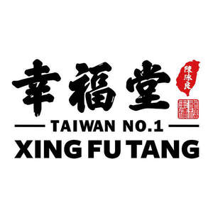

Trade Mark Journal No.2025/028 11 July 2025
UK00004211127 29 May 2025 (29,30,32,35,43)

- Class 29
- Milk beverages, milk predominating; milk; milkshake; milk-based beverages flavored with chocolate; milk-based beverages flavored with vanilla; milk-based strawberry-flavored beverages; milk beverages with high milk content; lactic acid bacteria drinks; rice milk; soybean milk (soy milk); cheese; tofu; meat; processed meat products; meat-based spreads; meat-based snack foods; pre-packaged dinners consisting primarily of meat; prepared dishes consisting principally of meat; salty crispy chicken; fried chicken nuggets; fried chicken; fried meat; fish fillets; fried fish sticks; pre-packaged dinners consisting primarily of fish; prepared dishes consisting principally of fish; croquettes; chicken croquettes; fish croquettes; salmon croquettes; French fries; hash browns; fried tofu pieces (abura-age); preserved vegetables; tempura vegetables; fried onion rings; processed sweet potatoes; mozzarella sticks; marinara stuffed cheese sticks; mushrooms, processed; fried king oyster mushrooms; vegetable soup preparations; red bean soup; mung bean soup; groundnut kernel soup; soup; eggs; dried meat floss; artificial meat; vegetable salads; chicken salads; potato salads; uncooked hamburger patties.
- Class 30
- Soup dumplings; noodles; tea; flowers or leaves for use as tea substitutes; iced tea; tea-based beverages; flavourings, other than essential oils, for beverages; coffee; coffee beverages with milk; coffee-based beverages; cocoa; cocoa beverages with milk; chocolate beverages with milk; chocolate-based beverages; confectionery; cookies; bread; cakes; popcorn; puddings; condiments; instant rice; dried noodles ; ice cream; sugar; sago; processed tapioca products in pearl form; fruit cakes; pastries; cheesecakes; chocolate cakes; stuffed buns; steamed buns stuffed with minced meat (niku-manjuh); Chinese steamed dumplings (shumai, cooked); Chinese steamed dumplings; stuffed dumplings; wonton chips; rice dumplings; bowl of rice served with toppings; Asian noodles with beef; high-protein cereal bars.
- Class 32
- Carbonated beverages, non-alcoholic; vegetable-based beverages and fruit-based beverages; fruit beverages and fruit juices; bottled water; non-alcoholic beverages flavoured with tea; non-alcoholic beverages flavoured with coffee; fruit-based beverages; frozen fruit-based beverages; smoothies; fruit smoothies; syrups for beverages; non-alcoholic beverages; non-alcoholic protein drinks; Protein-enriched sports beverages.
- Class 35
- Providing assistance in the management of franchised businesses; import-export agencies; Retail store services connected with the sale of non-alcoholic beverages; retail store services connected with the sale of preserved, frozen, dried and cooked fruits and vegetables; retail store services connected with the sale of flour and preparations made from cereals; retail store services connected with the sale of chocolate products; retail store services connected with the sale of condiments; retail store services connected with the sale of tea; retail store services connected with the sale of meat, poultry and game; retail store services connected with the sale of fish-based foodstuffs; retail store services connected with the sale of nutritional supplements; wholesale store services connected with the sale of non-alcoholic beverages; wholesale store services connected with the sale of preserved, frozen, dried and cooked fruits and vegetables; wholesale store services connected with the sale of flour and preparations made from cereals; wholesale store services connected with the sale of chocolate products; wholesale store services connected with the sale of condiments; wholesale store services connected with the sale of tea; wholesale store services connected with the sale of meat, poultry and game; wholesale store services connected with the sale of fish-based foodstuffs; wholesale store services connected with the sale of nutritional supplements; Retail store services via an internet shopping mall connected with the sale of non-alcoholic beverages; retail store services via an internet shopping mall connected with the sale of preserved, frozen, dried and cooked fruits and vegetables; retail store services via an internet shopping mall connected with the sale of flour and preparations made from cereals; retail store services via an internet shopping mall connected with the sale of chocolate products; retail store services via an internet shopping mall connected with the sale of condiments; retail store services via an internet shopping mall connected with the sale of tea; retail store services via an internet shopping mall connected with the sale of meat, poultry and game; retail store services via an internet shopping mall connected with the sale of fish-based foodstuffs; retail store services via an internet shopping mall connected with the sale of nutritional supplements.
- Class 43
- Provision of restaurant services; tea room services; bar services; cafe services; cafeteria services; food and drink catering; snack-bar services; self-service restaurant services.
YUNG-LIANG CHEN
Representative: Boult Wade Tennant LLP